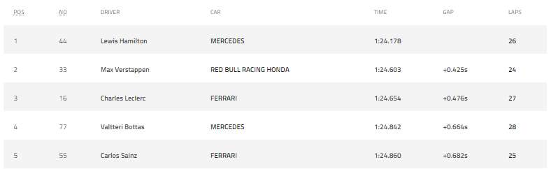
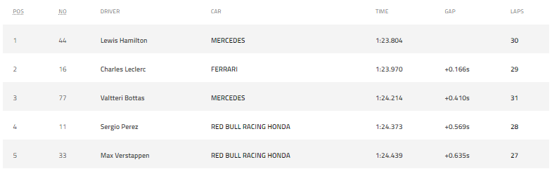
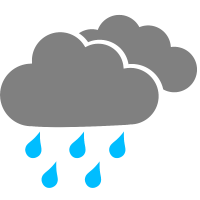

Treinos Livres - Practice 01
Tivemos um treino sem grandes novidades, os pilotos de destaque novamente foram os das equipes: Mercedes e RedBull, com exceção do Valteri Bottas que ficou atrás do piloto ferrarista Charles Leclerc.
Condição climática:
Incidentes graves:
Classificação - 5 primeiros pilotos:
Treinos Livres - Practice 02
Nessa sessão ja tivemos uma surpresa, a Ferrari quebrou a dobradinha da Mercedes com o Charles Leclerc que ocupou a 2ª posição de classificação, além disso tivemos uma piora no desempenho dos carros da RedBull.
Condição climática:
Incidentes graves:
Classificação - 5 primeiros pilotos:
Treinos Livres - Practice 03
Ainda mais supreeendente, o treino livre 03 teve o bom rendimento do carro da Alpha Tauri com Gasly ocupando a primeirissima posição!
Condição climática:
